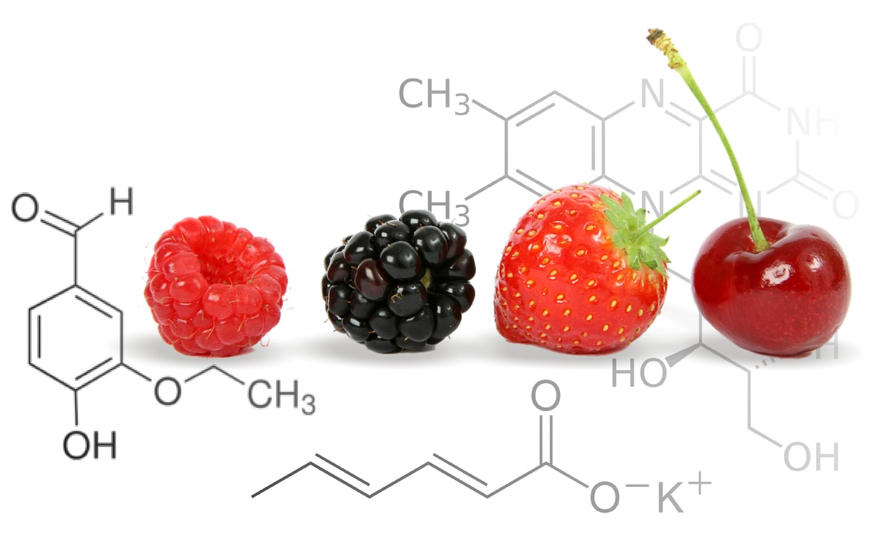

Surowce i dodatki dla producentów napojów i żywności
Zaopatrujemy producentów napojów, wód, win, wódek, piwa, przetworów i słodyczy w koncentraty, aromaty, dodatki do żywności i opakowania. Pomagamy też opracować technologię, normy i receptury.
- 36 latna rynku
- 56aromatów płynnych
- HACCPGHP i GMP wdrożone

Dystrybuujemy i reprezentujemy sprawdzonych producentów
- CAROTEXemulsje i koncentraty do napojów – dystrybutor
- JARaromaty spożywcze – dystrybutor
- Finn-Korkkikapsle z kółkiem (Finlandia) – przedstawiciel
- CAN-PACKkapsle koronowe – dystrybutor
- AKWAWITkleje dla przemysłu spożywczego
- HELIOSkleje dla przemysłu spożywczego (Słowenia)
Dla kogo pracujemy
Obsługujemy producentów z całej branży spożywczej
Od rozlewni wód po zakłady cukiernicze, gastronomię, farmację i kosmetykę. Zapraszamy też konsumentów indywidualnych do naszego sklepu internetowego.
Napoje bezalkoholowe
Emulsje, koncentraty, aromaty i receptury.
Wody butelkowane
Koncentraty magnezowe i wapniowe do mineralizacji wody.
Wina i wódki gatunkowe
Aromaty, butelki szklane, korki i zamknięcia.
Piwo
Kapsle koronowe, kleje do etykiet, dodatki.
Przetwory owocowo-warzywne
Koncentraty owocowe i warzywne, kwasy, konserwanty.
Wyroby cukiernicze
Dodatki cukiernicze, barwniki, aromaty proszkowe.
Gastronomia
Koncentraty do napojów, drinków, koktajli i deserów.
Farmaceutyki i kosmetyki
Surowce i dodatki dla zakładów farmaceutycznych i kosmetycznych.
Chemia gospodarcza
Kompozycje zapachowe i olejki aromatyczne.
Oferta
Wszystko, czego potrzebuje linia produkcyjna
Aromaty
Płynne i proszkowe, olejki aromatyczne oraz kompozycje zapachowe do chemii gospodarczej.
Zobacz asortymentKoncentraty owocowe i emulsje
Emulsje do napojów, koncentraty z owoców krajowych i egzotycznych – konwencjonalne, bio i puree.
Zobacz asortymentDodatki spożywcze
Kwasy, konserwanty, słodziki, dodatki cukiernicze i barwniki spożywcze.
Zobacz asortymentNapoje i wody
Napoje funkcjonalne – napój profilaktyczny AMBAR, wody mineralne i lecznicze.
Zobacz asortymentButelki szklane
Butelki na syropy, soki, wina, nalewki i alkohole – hurtowo od palety i detalicznie.
Zobacz asortymentZamknięcia, kleje, etykiety
Kapsle i nakrętki, kleje do etykiet, folie, papier pakowy i środki myjące.
Zobacz asortymentTechnologia
Technologie produkcji, receptury, normy zakładowe, HACCP oraz dobór maszyn.
Zobacz asortymentNie widzisz produktu?
Posiadamy dodatki do żywności wielu firm z kraju i zagranicy. Napisz – sprawdzimy dostępność.
Zapytaj
Usługi
Więcej niż dostawca – partner technologiczny
Opracowujemy technologię produkcji, normy i receptury. Drukujemy etykiety, ulotki i foldery, a także zajmujemy się reklamą i promocją napojów i wód.
Technologia i receptury
Technologie produkcji napojów i wody magnezowej, receptury napojów bezalkoholowych i wody mineralizowanej.
Normy zakładowe i HACCP
Normy na napoje gazowane, niegazowane i wodę mineralizowaną. Wdrażanie i szkolenia GHP, GMP i HACCP.
Etykiety i materiały reklamowe
Projektujemy i drukujemy etykiety, winietki, ulotki i foldery. Katalog etykiet do adaptacji na każdy napój.
Maszyny i urządzenia
Zapewniamy dobór i montaż maszyn i urządzeń.


Oferta specjalna · od 2009 roku
Napój profilaktyczny AMBAR
Izotoniczny, wysoko zmineralizowany napój dla osób pracujących fizycznie i umysłowo oraz dla sportowców. Pomaga pracodawcom spełnić obowiązek zapewnienia napojów profilaktycznych zgodnie z przepisami BHP.
- 100 mgmagnezu / l
- 200 mgwapnia / l
- 460 mgsodu / l
- Butelki szklane 0,33 l oraz PET 0,5 l i 1,5 l
- Pozytywna opinia NIZP–PZH i Centralnego Instytutu Ochrony Pracy
- 17 wersji dla różnych grup zawodowych i wiekowych
- Dostawa na terytorium całej Polski
Dlaczego AMBAR
Doświadczenie, któremu ufają producenci
Na rynku od 36 lat
AMBAR powstał 1 października 1990 r., ALDO działa od 1 maja 1991 r. Dwie rodzinne firmy, jeden zespół.
HACCP, GHP i GMP
Mamy opracowane i wdrożone zasady Dobrej Praktyki Higienicznej, Dobrej Praktyki Produkcyjnej oraz HACCP.
Członkostwa
Krajowa Izba Gospodarcza „Przemysł Spożywczy i Opakowań” oraz Polskie Towarzystwo Magnezologiczne im. prof. Juliana Aleksandrowicza.
Wiedza i publikacje
Współpracujemy z czasopismami branżowymi:
- Agro Przemysł
- Aura
- Bezpieczeństwo i Higiena Żywności
- Przemysł Fermentacyjny i Owocowo-Warzywny
- Przemysł Spożywczy
- Przegląd Piekarski i Cukierniczy
- Zdrowa Żywność i Zdrowy Styl Życia
„Wśród swoich klientów cieszy się opinią solidnego i godnego zaufania partnera.”
Porozmawiajmy o Twojej produkcji
Biuro i magazyn w Brzeziu koło Krakowa · pn–pt 8:00–16:00